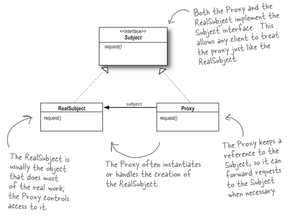
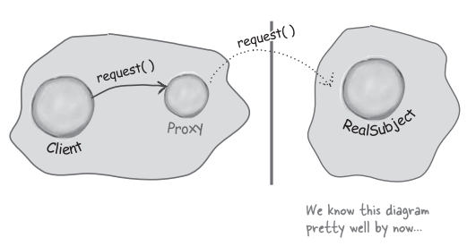
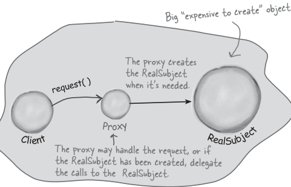
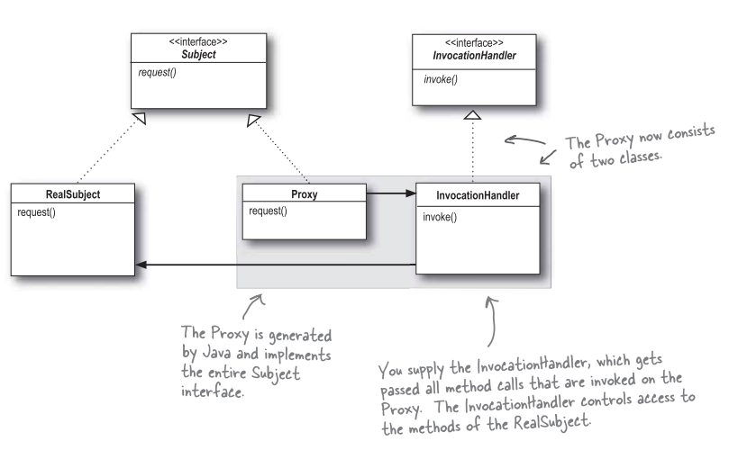

The Proxy Pattern
Provides a surrogate or placeholder for another object to control access to it.

Use the Proxy Pattern to create a representative object that controls access to another object,
which maybe remote, expensive to create or in need of securing.
Remote Proxy
With Remote Proxy, the proxy acts as a local representative for an object that lives in a different JVM.
A method call on the proxy results in the call being transferred over the wire, invoked remotely, and the result
being returned back to the proxy and then to the client.

Virtual Proxy
Virtual Proxy acts as a representative for an object that may be expensive to create. The Virtual Proxy
often defers the creation of the object until it is needed; the Virtual Proxy also acts as a surrogate for the object before and
while it is being created. After that, the proxy delegates requests directly to the RealSubject.

Protection Proxy
It's a proxy that controls access to an object based on access rights. For instance, if we had
an employee object, a protection proxy might allow the employee to call certain methods on the object. a manager to call
additional methods(like setSalary())), an a human resources employee to call any method on the object.
